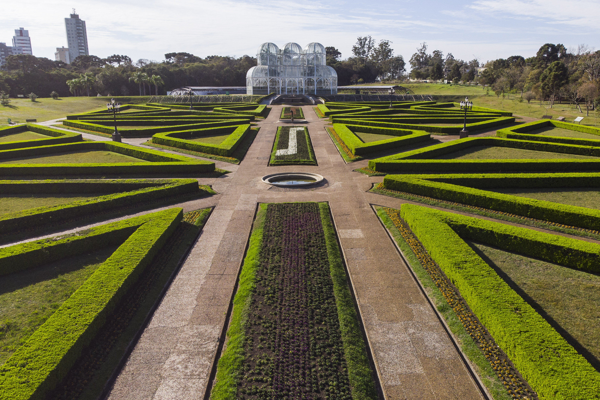
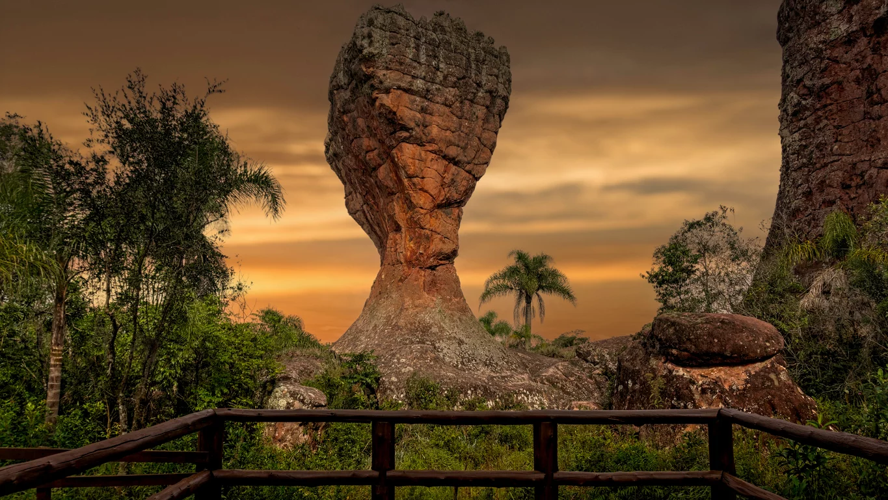
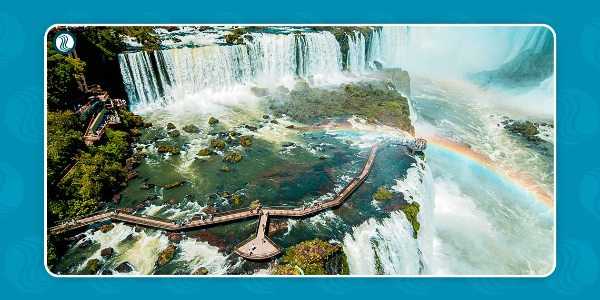
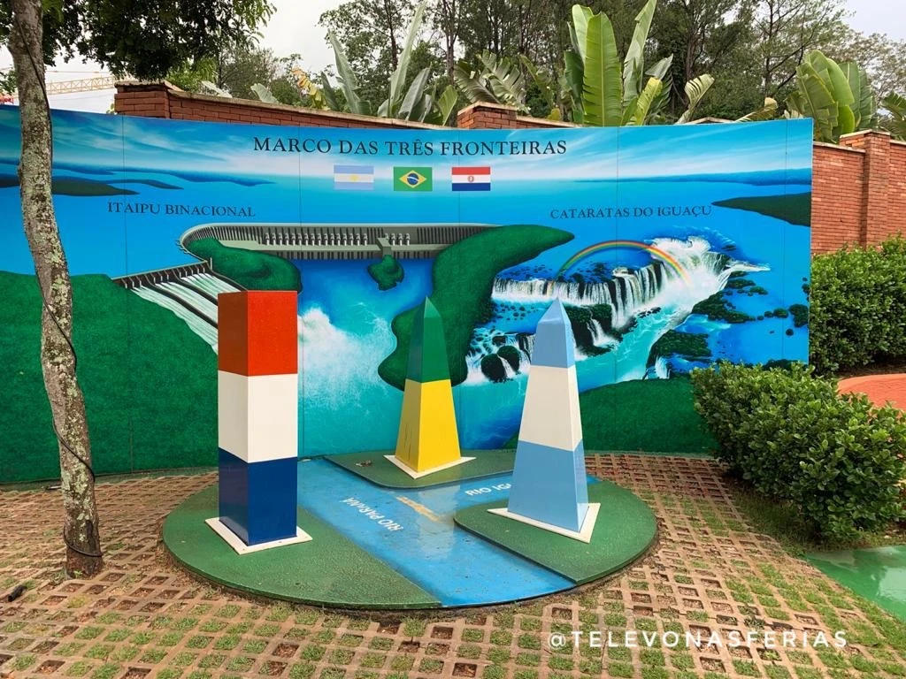
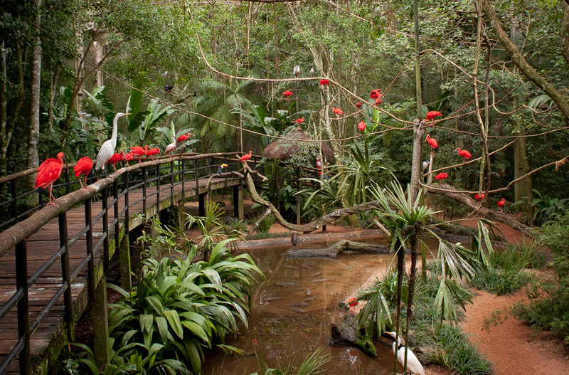
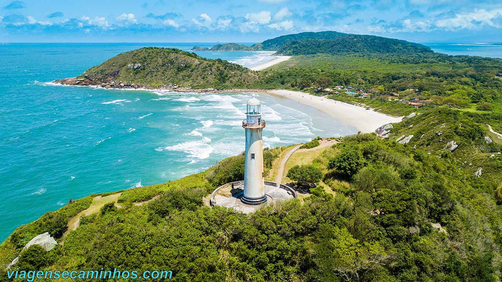
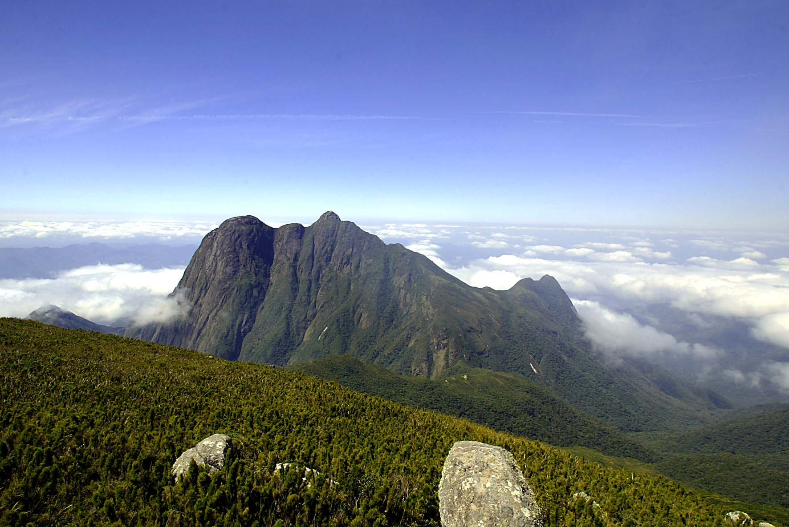

Nesse site você encontrará alguns dos principais pontos turísticos do Paraná.
JARDIM BOTÂNICO
Localizado na Rua Engenheiro Ostoja Roguski, 350, em Curitiba, é um famoso espaço público com estufa de vidro, jardins e coleções de plantas. É um ícone arquitetônico e turístico da cidade, conhecido por sua estufa em forma de estrela, inspirada no Palácio de Cristal de Londres. O jardim abriga uma grande variedade de plantas e serve como um centro de pesquisa e conservação da flora regional. Também é um local popular para passeios e eventos culturais.
PARQUE VILA VELHA
O Parque Estadual de Vila Velha é uma Unidade de Conservação localizada na cidade de Ponta Grossa. É famoso por suas formações geológicas únicas, que incluem arenitos e furnas esculpidos pela erosão ao longo de milênios. O parque é uma atração turística popular e um importante local de preservação da natureza na região.O Parque Estadual de Vila Velha é uma área de beleza cênica impressionante e oferece uma experiência única para os amantes da natureza, geologia e ecoturismo.
CATARATAS DO IGUAÇU
As Cataratas do Iguaçu são um sistema de cerca de 275 quedas d'água localizadas na fronteira entre o Brasil e a Argentina, em parques nacionais. São conhecidas por sua grandiosidade, com destaque para a "Garganta do Diabo", uma queda de mais de 80 metros de altura. A região é rica em biodiversidade e oferece oportunidades para observação da vida selvagem. É um destino espetacular para apreciar a natureza e suas maravilhas.
MARCO DAS TRÊS FRONTEIRAS
O Marco das Três Fronteiras é um local simbólico na confluência dos rios Iguaçu e Paraná, marcando a fronteira entre o Brasil, a Argentina e o Paraguai. Ele representa a união e amizade entre os três países e é um destino turístico com monumentos, mirantes e espetáculos que celebram a cultura e história da região. É uma atração significativa na tríplice fronteira, acessível a partir das cidades vizinhas e um local de importância histórica e cultural.
PARQUE DAS AVES
O Parque das Aves, localizado em Foz do Iguaçu, é um centro de conservação e educação ambiental dedicado à proteção de aves da Mata Atlântica. Oferece oportunidades de observação de aves em recintos naturais, interatividade com algumas espécies, e foca na educação ambiental e conscientização sobre a conservação da biodiversidade. O parque desempenha um papel importante na preservação e no compromisso ambiental, sendo frequentemente visitado por turistas que exploram a região das Cataratas do Iguaçu.
BURACO DO PADRE

O Buraco do Padre é uma caverna natural na cidade de Ponta Grossa, esculpida em rochas de arenito ao longo de milênios. É conhecido por uma cachoeira que despenca diretamente no interior da caverna. Os visitantes acessam a caverna por trilhas e escadas e podem apreciar a beleza da Mata Atlântica ao redor. É uma atração popular para amantes da natureza e turistas que desejam explorar essa formação geológica única.
ILHA DO MEL
A Ilha do Mel,situada na embocadura da baía de Paranaguá, no estado do Paraná, é uma ilha com praias deslumbrantes, trilhas naturais e ecossistemas preservados. É um destino de ecoturismo conhecido por suas paisagens naturais, incluindo dunas, matas e vida selvagem. A ilha é acessível apenas por barco e não permite a circulação de veículos motorizados para proteger o ambiente. Além de suas belezas naturais, a Ilha do Mel tem uma rica história e cultura, sendo um refúgio tranquilo para aqueles que desejam desconectar e apreciar a natureza.
PICO PARANÁ
O Pico Paraná é o ponto mais alto do estado do Paraná, com cerca de 1.877 metros de altitude. Localizado na Serra do Ibitiraquire, é um destino popular para alpinistas e montanhistas, conhecido por suas trilhas desafiadoras e paisagens exuberantes, incluindo florestas, riachos e cachoeiras. A região exige preparação e cuidados devido às condições climáticas imprevisíveis, e é uma área de preservação ambiental. É uma atração para quem busca aventura e apreciação da natureza no Paraná.